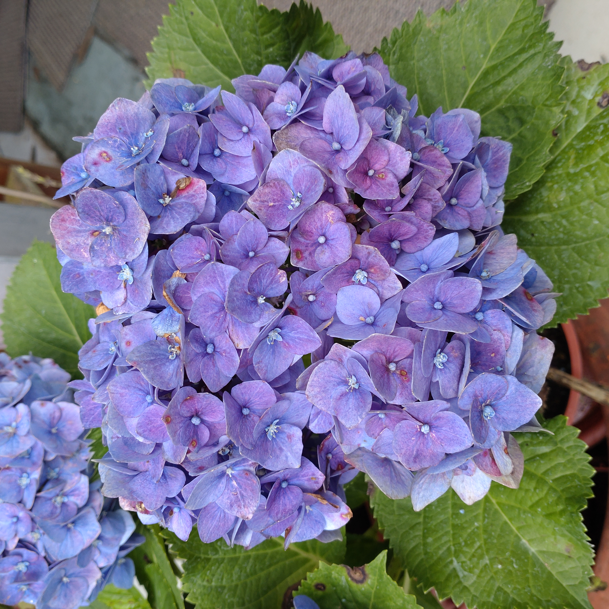
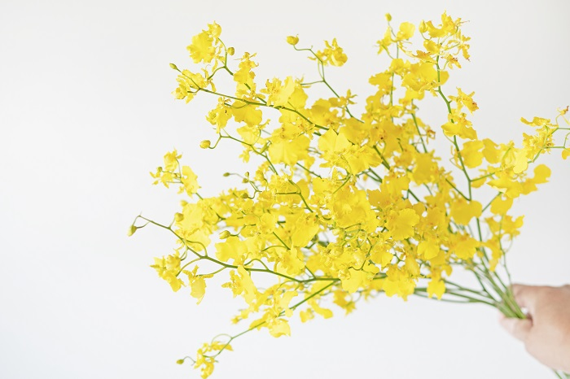

繡球花原產於日本，是一種常見的園藝裝飾花，花色一般包括紅、藍、紫色，會因所在環境的酸鹼度引起花色變化，所以也可作為天然的酸鹼指示劑，其在酸性的土壤偏向青色、中性~鹼性的土壤則偏向紅色。 夏季開花，花期5-8月。 也常用於製作乾花。
文心蘭又稱為跳舞蘭，英名為Oncidium，盛開時花朵唇辦宛如一群婆娑起舞的曼妙女郎之裙擺而得此美名。 花色有鮮艷的金黃色、赭紅色、米色、粉紅色或是褐色斑點、褐色花紋等變化。 文心蘭全年均可開花，盛產期集中在秋天及春天二季，有些品種一個假球莖可抽2支花梗以上，花期長達1~2個月。
